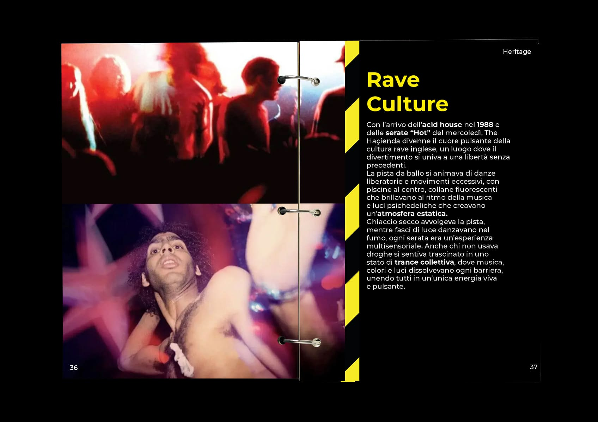
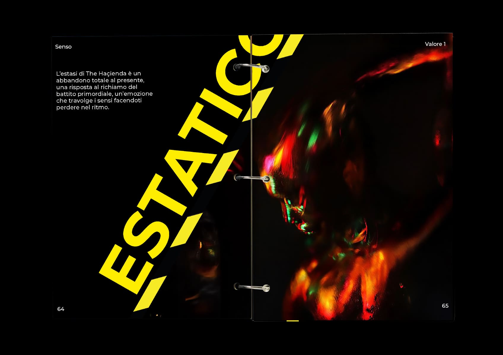
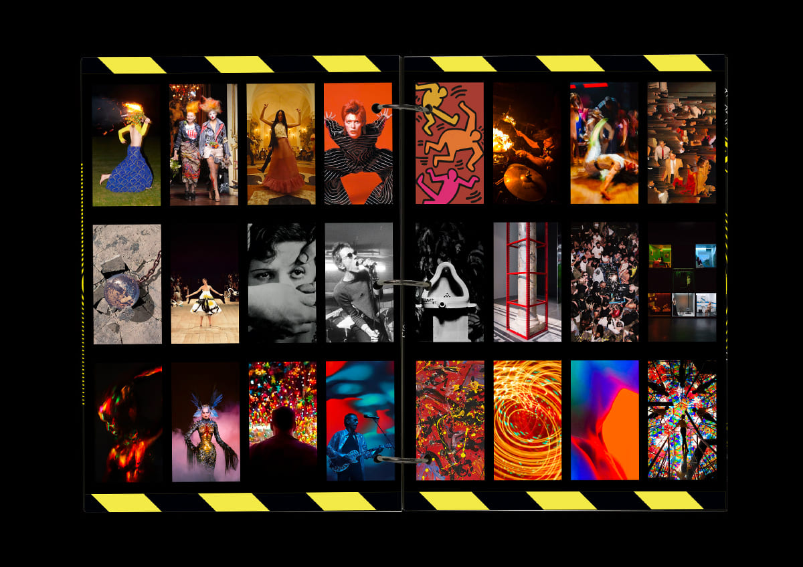
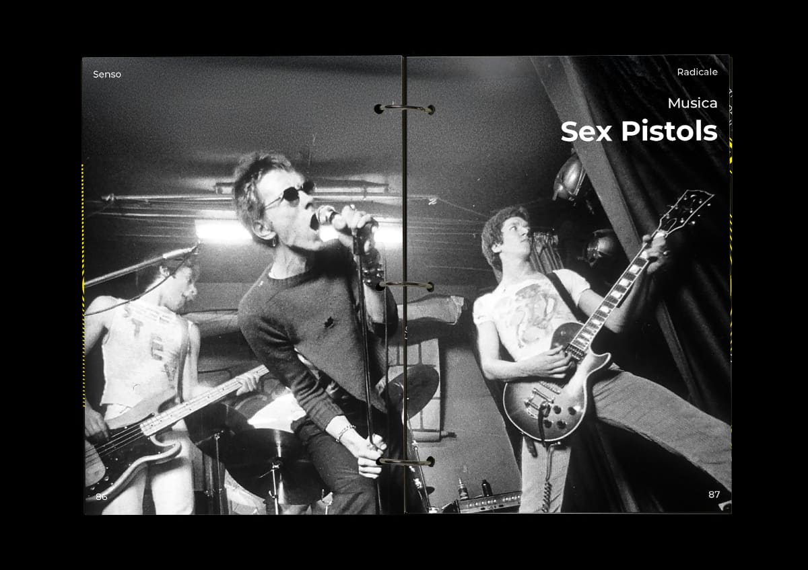
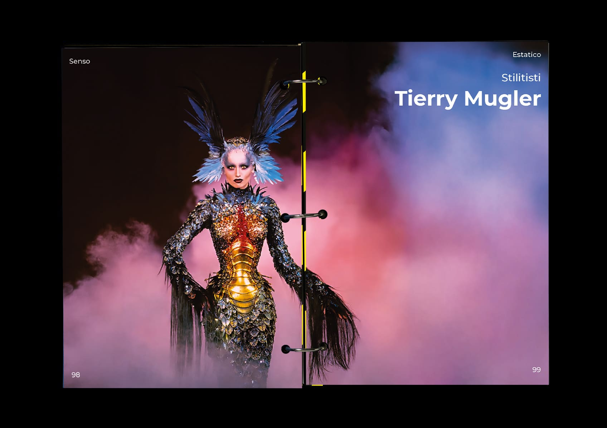

THE HAÇIENDA
Il progetto La Haçienda consiste in un rebranding volto a riportare in vita la storica discoteca di Manchester, attraverso un lavoro di ricerca e analisi della sua identità e la progettazione di un evento di lancio del nuovo brand. Il brandbook si apre con una sezione dedicata all’heritage del locale e prosegue con la definizione dei valori principali: libertà, radicalità ed estasi. A ciascun valore è stata associata un’immagine rappresentativa e un insieme di riferimenti provenienti da diversi ambiti espressivi, come arte, musica, cinema e moda, immaginando, ad esempio, quale artista, film o stilista potrebbe incarnarlo. Ogni valore è inoltre descritto attraverso tre caratteristiche chiave, contribuendo a costruire un’identità chiara e coerente del brand.




